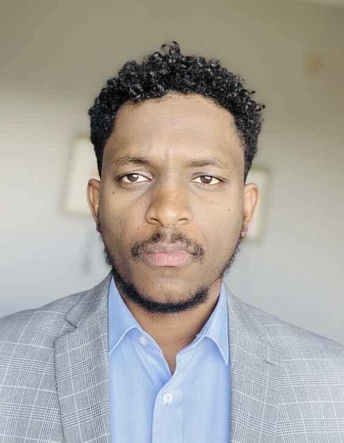

I design and run the infrastructure underneath national-scale systems , Kubernetes platforms, multi-cloud and on-prem private cloud, and the DevSecOps pipelines that keep them shipping safely. 7+ years building for government, UN, and telecom programs across Africa.

Principal-level work is as much about direction-setting as it is about the stack.
Multi-cloud and hybrid systems, on-prem private cloud, and Kubernetes platforms designed to hold up under national-scale traffic and real disaster-recovery requirements.
Scrum Master and Solution Architect for 10+ engineer teams , owning roadmap, release planning, and delivery outcomes, not just the pipeline.
Security-integrated CI/CD as the standard, not an add-on , SAST/DAST built into the pipeline from day one, cutting risk and cycle time together.
A track record of zero-data-loss cutovers and cross-region replication under load, for systems that can't afford downtime.
Six years moving from telecom operations to platform architecture and technical leadership.
The platform, cloud, and delivery toolchain behind the work above.
Unity University , Addis Ababa, Ethiopia